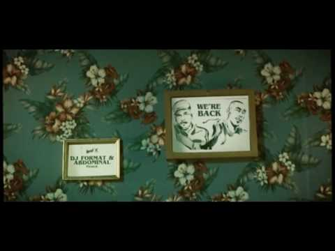

XKLUSIVE
THE UXK HEADLINER
The artist Trav has backed since 2015 — eleven years deep. St. Ann, Jamaica's own Broomy Boss: "Bad Youth" is the latest video, "Doom" with Popcaan is the biggest link-up of his career. Press play. This is the main entry.
NEW: BAD YOUTH · DOOM FT. POPCAAN · BAD DJ EP

$49 Limited Submission Drop

Worldstar & Q Live in Toronto

Believe In Us
UXK LIVE
CHECKING LIVE STATUS…CATCH ME LIVE
This is the main place you'll see me live online — streaming on Kick and on TikTok Live. Pull up, tap in, be part of the KONNECT in real time.
Search UrbanXklusives

REVIVAL'S HALLOWEEN WEEK — MADHAUS FREAK SHOW OCT 30 ($25) + HIP-HOP KARAOKE NOV 6 ($20)
OCT 19, 2026 · BY TRAV MANE
Revival Event Venue (783 College St) is running Halloween week for the hip-hop heads. Fri Oct 30 — Madhaus Freak Show Halloween, 10pm–3am, $25. Then Fri Nov 6 — Hip-Hop Karaoke returns, 9:30pm–2:30am, $20 — and on that night, YOU are the show.
Hip-Hop Karaoke Toronto is an institution — Abdominal and More Or Les holding it down, hundreds of rap classics on deck, live-stage energy, you on the mic. If you've never grabbed that mic, Nov 6 is your night. Round two at Revival.
Halloween week in Toronto gets expensive fast. $25 and $20 for real nights out with real music? That's the people's price. Costume up, pull up.
🎵 REVIVAL — EVENT CALENDAR · WATCH ON YOUTUBE

DRAKE OWNS BILLBOARD — 18 NO. 1 R&B/HIP-HOP ALBUMS, MOST EVER
OCT 19, 2026 · BY TRAV MANE
HABIBTI just jumped from No. 35 to No. 1 on Billboard's Top R&B/Hip-Hop Albums chart — and with it, Drake broke a record The Temptations held for 60 YEARS. That's 18 No. 1 albums, passing Future and the Motown legends (17 each). 71,000 units in one week, up 506%. Numbers don't lie.
Here's the play: the HABIBTI (FOMO) deluxe added four tracks — "Solar Eclipse" with Don Toliver, "Quebec," "Cold Shoulder" with Toliver and Yebba, "Classic Pt 2" — and Billboard counts every edition as one album. Deluxe editions are the new albums. Drop four songs, watch the catalog do the work. Drake knocked his OWN album ICEMAN off the top spot to do it.
And the catalog war is real — the money markets got Drake up 60/40 over The Weeknd in the Toronto catalog debate. 17 BILLION Spotify streams in 2026 alone. Take Care from 2011 still in the top 3 this week. Love him or hate him, the 6 God turned a deluxe into history. Watch the record that did it above. 🏆
🎵 SOURCE: BILLBOARD · WATCH ON YOUTUBE

"JANICE STFU" IN COURT — PRODUCER SUES DRAKE, SAYS HE HAS THE STEMS
OCT 19, 2026 · BY TRAV MANE
Grammy-winning producer Aviel Calev Hirschfield — "Avi," aka GoodbyeCalev, the man who co-wrote Beyoncé's "Heated" — filed a federal lawsuit on Oct 16 claiming the "Janice STFU" hook is his. His story: he wrote an eight-line chorus in Dec 2025/Jan 2026 over an FnZ instrumental, inspired by Lykke Li's "I Follow Rivers" on a drive to Seattle, sent the demo to Drake's circle, heard nothing — then heard it on ICEMAN in May. He says his stems and metadata prove he was first.
Drake's camp came back swinging — "categorically, unequivocally denied," his rep told TMZ: "There is not one iota of truth to these accusations... Drake wrote this song and has no connection or knowledge of this person, full stop." They also say Avi's metadata was doctored and hit him with a cease-and-desist over his authorship claims. Classic receipts war: stems vs. metadata.
Let's be clear — no court has decided anything. But the stakes are real: "Janice STFU" was a two-week Hot 100 No. 1 with 20 weeks atop Hot Rap Songs and 300M+ Spotify streams. This is why every producer needs to hear this: register your work, timestamp everything, keep your stems. Play the record above and decide for yourself. 🎚️
🎵 SOURCE: BILLBOARD / TMZ · WATCH ON YOUTUBE

AK SAID NO TO THE BAG — LIL BABY'S TEAM TRIED TO PAY HIM MID-BEEF
OCT 19, 2026 · BY TRAV MANE
DJ Akademiks says Lil Baby's team hit him with a marketing request to promote a Dec 4 show — while they're actively beefing. His words on stream: "They were down to pay again... 'No, it's fine. We'll pay you.' And I declined this time. Your money's no good with me." This is wild when you remember Ak ALREADY admitted on camera that QC paid him for favorable Lil Baby coverage — that's what the video above breaks down.
The backstory is messy: the slap incident with Baby's associate K Rich in Miami, the failed boxing challenge (Baby wanted $40M, Ak said he priced himself out of smoke), years of shots fired since Baby dissed Ak on "Top Priority" and "From Now On." Ak now claims Baby's camp tried to "silence him with payment." Nothing's been proven from Baby's side — Lil Baby hasn't responded.
Here's the UXK angle: this is what happens when media and label money mix. Paid promo presented as opinion is poison for the culture. Independent voices stay independent or they become commercials. Salute to any platform that turns down the bag to keep its word. Ak turned it down THIS time. The receipts on the last time are right above. 🎙️
🎵 SOURCE: HOTNEWHIPHOP / THE NEEDLE DROP · WATCH ON YOUTUBE

HOT 97'S OWN HOSTS TORCHED THE STATION — ON THEIR OWN MIC
OCT 19, 2026 · BY TRAV MANE
On Oct 14, The Kid Mero and Kazeem "Kaz" Famuyide turned "Mornings With Mero" into a 15-minute on-air trial of their own bosses — blasting Hot 97/MediaCo leadership over layoffs, cost-cutting, unpaid freelancers, and ancient equipment. Kaz called it "the worst place" he's ever worked. Then the station scrubbed the stream from their own YouTube. You can't un-hear the internet, though.
The receipts kept coming: Ebro, Peter Rosenberg, and Laura Stylez already walked over the same cost-cutting. Former producer Scottie Beam alleged talent got furloughed and payments stalled. Joe Budden called Mero live on air to co-sign: "If they gon' keep letting you in the building, keep burning that s**t down on their microphone." Even Akademiks jumped in demanding $5M to take the morning show.
This is exactly why independent platforms are eating legacy radio alive. When the talent has to fight the building just to get paid, the building loses. UrbanXklusives was built for this moment — artists and voices that don't need a boardroom's permission. The breakdown of the whole mess is above. 📻
🎵 SOURCE: BARRETT MEDIA / COMPLEX · WATCH ON YOUTUBE

EMINEM x EZ MIL — "MADARA," THIRD ROUND, ANIME VILLAIN ENERGY
OCT 19, 2026 · BY TRAV MANE
Eminem and Ez Mil just linked for the third time — "MADARA" dropped Oct 9, a Naruto-inspired war record named after the anime's most feared villain. After "Realest" (2023) and "Head Honcho" (2024), the Shady Records connection is officially a SERIES. And Em didn't just verse it — he co-produced it.
The lineup is global: Ez Mil (the first Filipino artist signed to Shady/Aftermath/Interscope), Tokyo rapper Hideyoshi on the hook, and Neil Kaplan — the actual English voice of Madara Uchiha — delivering villain lines. Ez Mil even raps in Japanese. Em taps into that old Slim Shady character voice, and the internet is split down the middle on the vocal filter. Technical pen? Untouchable, as always.
Lead single off Ez Mil's upcoming 3RD WRLD VOL. 2 EP. Anime meets bars meets two continents — this is what the culture looks like when nobody's gatekeeping. Press play above. 🥷
🎵 SOURCE: BILLBOARD / COMPLEX · WATCH ON YOUTUBE

YK OSIRIS GOT STOPPED — DESHAE FROST, 2ND ROUND TKO AT BRAND RISK 16
OCT 19, 2026 · BY TRAV MANE
Deshae Frost stopped YK Osiris by TKO at 2:59 of round 2 on Adin Ross's Brand Risk 16 card in Miami (Oct 16) — the co-main event. All that trash talk, and YK didn't see the third round. This one started back at Brand Risk 15 when YK slapped Deshae in the ring. Deshae collected his receipt in front of everybody.
The whole card was chaos: Michael Beasley TKO'd Delonte West in the first round, and YK nearly got into it with DDG before the fight even started. Full fight above — watch it yourself, because YK talked himself into this one and the timeline is NOT letting him forget it.
Real talk though — YK keeps climbing in the ring, win or lose, and that takes guts. But the internet remembers every bar you spit before the bell. Back up the talk or take the L quiet. 🥊
🎵 SOURCE: ALLHIPHOP / THE SHADE ROOM · WATCH ON YOUTUBE

50 CENT: THE RICK ROSS BEEF IS "ALL ENTERTAINMENT" — "ROZAY A COP"
OCT 19, 2026 · BY TRAV MANE
On The Crew Has It podcast (Oct 14), 50 Cent reopened his 17-year war with Rick Ross with pure comedy: "The most difficult beef to have… it's when the person you're beefing with is law enforcement. You can't do much. They are sworn in under oath. When it gets hot, they're just going to tell, bro." Rozay's Florida correctional officer past stays undefeated as a punchline.
50 didn't stop there — he called Ross's Fayetteville mansion a "big white elephant" where half the AC doesn't even work, and claimed Rozay's camp stages fake shootings. Then, in the same breath, he said the whole thing is just fun: "That's all entertainment to me." Translation: I'll clown you forever, but I ain't losing sleep.
Meanwhile Ross is dealing with real legal heat of his own on a battery charge — 50 picked his moment, like always. Nearly two decades and neither man blinked. Watch the full episode above. 🎤
🎵 SOURCE: XXL / HOT97 · WATCH ON YOUTUBE
TORY LANEZ TOOK OVER LA — WITHOUT EVER LEAVING HIS CELL
OCT 19, 2026 · BY TRAV MANE
The "Not On Tor" Tour hit Los Angeles on Oct 15 and it was a MOVIE: Blueface, Tyga, Chrisean Rock, Fenix Flexin, and a New Boyz reunion all touched the stage. Tyga ran "Rack City," the crowd chanted "Free Tory," and Chrisean got booed off. The artist on the flyer? Sitting in a California prison cell. Five-hour listening parties, upgraded to a bigger venue after NYC sold out.
Let that sink in. Tory is running a multi-city tour from behind bars — NYC kicked off Sept 25 with A Boogie, Bobby Shmurda, A$AP Ferg and Pressa; DC (Oct 22), New Orleans (Nov 12), Pittsburgh (Nov 13) next. Toronto and Montreal dates are still expected — and if Toronto gets one, you KNOW the city shows out.
Backlash or not, the demand is real: organizers had to upgrade every venue. The music keeps moving even when the artist can't. That's the game now. Press play on his latest above. 🔥
🎵 SOURCE: HOTNEWHIPHOP · WATCH ON YOUTUBE

ZAYTOVEN SAID "BEAT DONT FAIL ME NOW" — AND TRAV WAS IN THE ROOM
OCT 19, 2026 · BY TRAV MANE
The Godfather of Trap said it himself — "beat don't fail me now" — and his reel has been doing NUMBERS across the internet. Zaytoven in his bag, 10-minute beats, that signature church-keyboard bounce that built a whole generation of Atlanta. When Zay talks, producers listen.
But here's the part nobody else can say: Trav was IN THE ROOM. Zaytoven keynoted IMSTA FESTA Toronto on Oct 17 at York University — the same room where Trav shot our own recap footage. While everybody else watches clips, UrbanXklusives stood ten feet from the architect. That ain't a flex, that's a fact.
From Gucci Mane's first tapes to Migos' "Versace" to teaching a room full of Toronto producers — Zaytoven is the blueprint. Our recap from the room is above. Go run it up. 🎹
🎵 SOURCE: URBANXKLUSIVES ORIGINALS · WATCH ON YOUTUBE
TRAP DICKEY SIGNS TO TDE — FIRST SOUTH CAROLINA ARTIST EVER
OCT 19, 2026 · BY TRAV MANE
Trap Dickey just inked with Top Dawg Entertainment — the house Kendrick Lamar, SZA, ScHoolboy Q and Doechii built. He's the first South Carolina artist EVER signed to TDE, per Variety's exclusive. From Hartsville, SC to the most respected rap label on earth. That's not luck, that's work.
The record that got him here: "Blue Devils" — nearly 15M streams, a DaBaby remix that trended Top 10 on YouTube, viral On The Radar and From The Block freestyles, co-signs from BigXthaPlug, Boosie, and Rylo Rodriguez. AllHipHop already crowned him "The New Face of South Carolina." Top Dawg himself said it: Dickey's story is real, straight from his life.
South Carolina has been screaming for a flag-bearer, and TDE just planted the flag. The Carolinas to the world. Press play on "Blue Devils" above and watch what a winning season looks like. 🏆
🎵 SOURCE: VARIETY · WATCH ON YOUTUBE

FREEWAY IS BACK — PHILLY PUNCHLINE ACADEMY CYPHER WENT CRAZY
OCT 19, 2026 · BY TRAV MANE
Freeway pulled up. The State Property legend touched down with The Punchline Academy's Lyric League Series for their first-ever Philly cypher — Da Inphamus Amadeuz cooked an original beat, Chuck Lawless assembled the lineup, and Freeway held it down alongside Philly's hungriest underground spittaz: Magic, 6'7, Animal Cub, and more. Real bars, no gimmicks.
This is what the culture is supposed to look like: a legend passing the torch IN THE CYPHER, not in a quote. Freeway put Philly on the map in the Roc-A-Fella era, and now he's standing shoulder-to-shoulder with the next wave. Who had the best verse — the vet or the youngins? Drop your pick.
The Punchline Academy airs Wednesdays on Shade 45 (SiriusXM), and their Lyric League Series is taking the cypher city to city. Philly did NOT disappoint. Watch the full cypher above. 🎤
🎵 SOURCE: THE PUNCHLINE ACADEMY · WATCH ON YOUTUBE
Get drops, vlogs, and exclusives first. One email when it drops — no spam, ever.
SIMILAR STORIES
- SENSE aka NEWKID — THEN AND NOW: TORONTO TO CALIFORNIA + HAPPY BIRTHDAY, MICHAEL BOURNE 🎂music
- TORONTO HALLOWEEN HIP-HOP: WHERE TO PULL UP OCT 30–31events
- HAMILTON’S SMOOTHIE LOU LEADS EXCLAIM’S SEPTEMBER EMERGING LISTmusic
- THE NO JUMPER CYPHER 2026 — LIVE FROM OUR HOODmusic
- DRAKE POPS OUT AT QENDRESA'S SOLD-OUT BABY G SHOW — "A REAL REAL SUPERSTAR"stories
- JANE AND FINCH TO DRAKE'S TOUR: PRESSA BUILT HIS OWN LABELstories